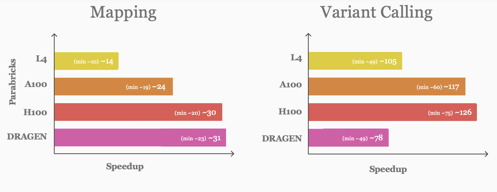
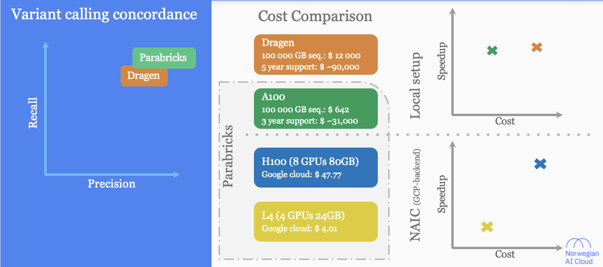

Introduction to Accelerated Genomics
Applied Machine Learning for Biological Data - Module 2, Day 5
Date: June 6, 2025
Time: 09:00-16:00
Prerequisites
BioNT course - A practical introduction to bioinformatics or equivalent knowledge
Introduction to Docker
Introduction to GPU
Learning outcomes
Gain a foundational understanding of the NVIDIA Parabricks software suite
Acquire practical experience in using Parabricks tools for basic germline variant calling workflow
Overall schedule
Introduction to NGS
Basic CPU-native NGS data processing workflow
Introduction to NVIDIA Parabricks
Parabricks Hands-on
Parabricks vs CPU-native NGS data processing
Introduction to NGS
Next Generation Sequencing (NGS)
DNA Sequencing process
Process of determining the order of nucleotides in a genome (genome codes the complete set of instructions for cellular functions)
Next Generation Sequencing (NGS)
Increasing the throughput by massively parallelising the sequencing process
Sequencing throughput and sequencing cost
Today, we are no longer limited by the availability of sequencing data due to the rapidly decreasing cost
Sequencing cost over the years
Sequencing throughput over the years
Main steps of DNA sequencing
NGS data analysis (Germline variant calling)
Main steps in NGS analysis
graph TD;
i1(Raw data) --> 1
i2(Reference data) --> 1
1(Mapping raw data onto the reference)
1 -- Alignment file --> 2
2(Optimization & fine-tuning of the alignment file)
2 -- Optimised & fine-tuned alignment file --> 3
3(Identify DNA changes)
classDef highlight fill:#99ccff;
classDef white fill:#ffffff;
class 1,2,3, highlight;
Precision genomics
Tailoring disease prevention and treatment based on the person’s genetic makeup
Here, we analyse raw sequencing data and identify changes in DNA that could lead to a diseases
Precision genomics in routine clinical practice
Sequence analysis workflows are routinely used in current clinical setting
However they all (a large majority) use CPUs for the computing power
Basic CPU-native NGS data processing workflow
Simplest NGS data processing workflows have two main stages
Read mapping and alignment refinement
Variant calling
Test data:
https://s3.amazonaws.com/parabricks.sample/parabricks_sample.tar.gzSource of the test data -
NVIDIA tutorials <https://docs.nvidia.com/clara/parabricks/4.3.0/tutorials/gettingthesampledata.html>_
Stage 1: Read mapping and alignment refinement
Step 1: BWA read mapping and sorting
#!/bin/bash
SAMPLE_NAME="pb_sample"
FASTA="Ref/Homo_sapiens_assembly38.fasta"
READ1="Data/sample_1.fq.gz"
READ2="Data/sample_2.fq.gz"
BAM_OUT="${SAMPLE_NAME}_CPU.bam"
## Run BWA MEM
### Source: https://github.com/nf-core/sarek/blob/f034b737630972e90aeae851e236f9d4292b9a4f/modules/nf-core/bwa/mem/main.nf#L30
bwa mem \
-t 64 \
-R "@RG\tID:rg1\tLB:lib1\tPL:bar\tSM:SM1\tPU:SM1_rg1" \
${FASTA} \
${READ1} ${READ2} \
| samtools sort -@64 -o ${BAM_OUT} -
samtools index -@64 -b ${BAM_OUT}
Step 2: GATK MarkDuplicates
#!/bin/bash
SAMPLE_NAME="pb_sample"
BAM_IN="${SAMPLE_NAME}_CPU.bam"
BAM_OUT="${SAMPLE_NAME}_markdup.bam"
## Mark duplicated reads in BAM file
gatk --java-options "-Xss3m -XX:-UsePerfData" MarkDuplicates \
--VALIDATION_STRINGENCY SILENT \
-I ${BAM_IN} \
-O ${BAM_OUT} \
-M metrics.txt \
--TMP_DIR temp_dir
samtools index ${BAM_OUT}
Step 3: GATK BaseRecalibrator
#!/bin/bash
FASTA="Ref/Homo_sapiens_assembly38.fasta"
KNOWN_SITES="Ref/Homo_sapiens_assembly38.known_indels.vcf.gz"
SAMPLE_NAME="pb_sample"
BAM_IN="${SAMPLE_NAME}_markdup.bam"
RECAL_FILE="CPU_recal.txt"
## Generate BQSR Report
gatk --java-options "-XX:-UsePerfData" BaseRecalibrator \
--input ${BAM_IN} \
--output ${RECAL_OUT} \
--known-sites ${KNOWN_SITES} \
--reference ${FASTA}
Step 4: GATK ApplyBQSR
#!/bin/bash
FASTA=GRCh38"/"GCA_000001405.15_GRCh38_no_alt_analysis_set.fna
BAM_IN="${SAMPLE_NAME}_markdup.bam"
RECAL_FILE="CPU_recal.txt"
BAM_OUT="${SAMPLE_NAME}_CPU_markdup_BQSR.bam"
## Run ApplyBQSR Step
gatk --java-options "-XX:-UsePerfData" ApplyBQSR \
-R ${FASTA} \
-I ${BAM_IN} \
--bqsr-recal-file ${RECAL_FILE} \
-O ${BAM_OUT}
Stage 2: Variant calling via HaplotypeCaller
#!/bin/bash
set -euo pipefail
SAMPLE_NAME="pb_sample"
FASTA="Ref/Homo_sapiens_assembly38.fasta"
BAM_IN="${SAMPLE_NAME}_CPU_markdup_BQSR.bam"
## Variant calling with HaplotypeCaller
gatk --java-options "-XX:-UsePerfData" HaplotypeCaller \
--input ${BAM_IN} \
--output ${BAM_IN}.vcf \
--reference ${FASTA} \
--native-pair-hmm-threads 64
NVIDIA Parabricks
Parabricks offers range of accelerated NGS data processing tools/commands
-
“Parabricks was built from the ground up by GPU computing and Deep Learning experts who wanted to develop the fastest and most efficient possible implementation of common genomics algorithms.”
We can use these commands and create a simple NGS data processing workflows with two main stages
Read mapping and alignment refinement
Variant calling

Parabricks workflow (basic workflow)
Stage 1: Read mapping and alignment refinement
Step 1: fq2bam

Step 2: applybqsr
Compatible GATK4 Command:
gatk ApplyBQSR
Stage 2: Variant calling
Parabricks HaplotypeCaller

Parabricks Hands-on
Objectives
Run Basic Parabricks pipeline
Time: 30 minutes
Step 01: Checklist
Checklist
Login to the VM assigned to you (Follow the instructions given previously)
Check for docker image -
nvcr.io/nvidia/clara/clara-parabricks:4.3.0-1
Commands:
# List Docker images in the VM
docker images
# Move the home directory
cd $HOME
# Check current working-directory (check if you are in $HOME)
echo current working directory: $(pwd)
Output
REPOSITORY TAG IMAGE ID CREATED SIZE
nvcr.io/nvidia/clara/clara-parabricks 4.3.0-1 1a84efd2eedf 14 months ago 3.23GB
current working directory: /home/ubuntu
Step 02: Generate Parabricks run-scripts
Step 02.1: fq2bam
Note
echo '#!/bin/bash
FASTA="/data/ngs/ref/Homo_sapiens_assembly38.fasta"
KNOWN_SITES="/data/ngs/ref/Homo_sapiens_assembly38.known_indels.vcf.gz"
READ1="/data/ngs/fastq/dw_sample_R1.fastq.gz"
READ2="/data/ngs/fastq/dw_sample_R2.fastq.gz"
pbrun fq2bam \
--ref ${FASTA} \
--in-fq ${READ1} ${READ2} \
--num-gpus 1 \
--knownSites ${KNOWN_SITES} \
--out-bam pbrun_fq2bam_GPU.bam \
--out-recal-file pbrun_recal_gpu.txt \
--logfile fq2bam.log \
--tmp-dir .' > fq2bam.sh
Step 02.2: applybqsr
Note
echo '#!/bin/bash
FASTA="/data/ngs/ref/Homo_sapiens_assembly38.fasta"
pbrun applybqsr \
--ref ${FASTA} \
--in-bam pbrun_fq2bam_GPU.bam \
--num-gpus 1 \
--in-recal-file pbrun_recal_gpu.txt \
--logfile applybqsr.log \
--out-bam pbrun_fq2bam_GPU_applybqsr.bam ' > applybqsr.sh
Step 02.3: haplotypecaller
Note
echo '#!/bin/bash
FASTA="/data/ngs/ref/Homo_sapiens_assembly38.fasta"
pbrun haplotypecaller \
--ref ${FASTA} \
--num-gpus 1 \
--in-bam pbrun_fq2bam_GPU_applybqsr.bam \
--logfile hc.log \
--out-variants pbrun_fq2bam_GPU.bam_applybqsr.vcf ' > hc.sh
Step 3: Run docker in interactive mode
Run docker in interactive mode and enter the docker container
Note
docker run \
-it \
--rm \
--gpus all \
-v /data:/data \
-v $PWD:$PWD \
-w $PWD \
nvcr.io/nvidia/clara/clara-parabricks:4.3.0-1 bash
Step 4: Execute run_scripts
Now you are inside the docker container
# If you are inside docker; you'll see `root@712558e5c91f:/home/ubuntu#`
# Execute bash scripts you created
# Run fq2bam.sh
bash fq2bam.sh
# Run applybqsr.sh
bash applybqsr.sh
# Run hc.sh
bash hc.sh
Exit the docker container with
exitcommand
Step 5: Inspect results
Note
ls -l
total 1041856
-rw-r--r-- 1 root root 1707 Jun 5 21:42 applybqsr.log
-rw-rw-r-- 1 1000 1000 255 Jun 5 21:16 applybqsr.sh
drwxrwxr-x 3 1000 1000 4096 Jun 2 10:49 data
-rw-r--r-- 1 root root 2551016 Jun 5 13:37 deepvariant.vcf
-rw-r--r-- 1 root root 1893 Jun 5 13:37 dv.log
-rw-rw-r-- 1 1000 1000 33 Jun 4 13:25 file-with-numbers.txt
-rw-r--r-- 1 root root 4976 Jun 5 21:42 fq2bam.log
-rw-rw-r-- 1 1000 1000 443 Jun 5 21:15 fq2bam.sh
-rw-r--r-- 1 root root 1941 Jun 5 21:44 hc.log
-rw-rw-r-- 1 1000 1000 235 Jun 5 21:17 hc.sh
-rw-r--r-- 1 root root 516112463 Jun 5 21:42 pbrun_fq2bam_GPU.bam
-rw-r--r-- 1 root root 5447024 Jun 5 21:42 pbrun_fq2bam_GPU.bam.bai
-rw-r--r-- 1 root root 4719876 Jun 5 21:44 pbrun_fq2bam_GPU.bam_applybqsr.vcf
-rw-r--r-- 1 root root 532038424 Jun 5 21:42 pbrun_fq2bam_GPU_applybqsr.bam
-rw-r--r-- 1 root root 5447024 Jun 5 21:42 pbrun_fq2bam_GPU_applybqsr.bam.bai
-rw-r--r-- 1 root root 86706 Jun 5 21:42 pbrun_fq2bam_GPU_chrs.txt
-rw-r--r-- 1 root root 392014 Jun 5 21:42 pbrun_recal_gpu.txt
-rw-r--r-- 1 root root 0 Jun 4 16:59 test
Benchmarking accelerated next-generation sequencing analysis pipelines
Our Accelerated NGS analysis benchmark paper
Hardware Platforms for NGS analysis
Hardware accelerated platforms

Significant performance gain can be achieved with any accelerated platform
Runtime comparison

Above is a cartoon figure to highlight the patters the original paper contains correct figures
Speedup ## Quantify performance improvements (Speedup = CPU-only runtime ÷ Accelerated runtime)
Variant calling showed higher speedup than Mapping
Speedup comparison
 Above is a cartoon figure to highlight the patters the original paper contains correct figures
Parabricks resource usage provided new insights
Profiling Parabricks
Above is a cartoon figure to highlight the patters the original paper contains correct figures
Optimizing Parabricks for further performance gains
Solution

Above is a cartoon figure to highlight the patters the original paper contains correct figures
Parabricks and DRAGEN, speedup and cost consideration
Practical Selection Framework

Above is a cartoon figure to highlight the patters the original paper contains correct figures
Accelerated NGS analysis NextFlow pipeline